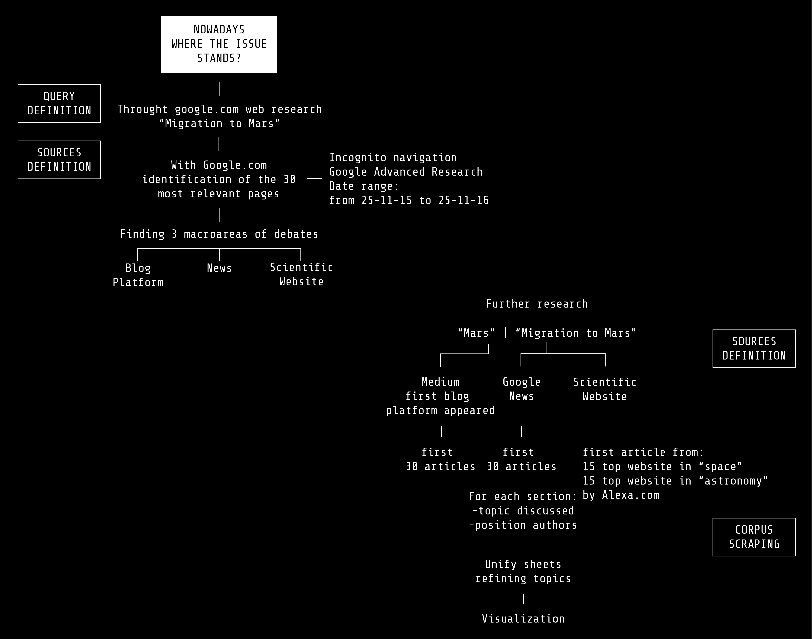

Protocol

First of all, we researched on Google.com, with incognito navigation mode, the query “Migration to Mars” to obtain the first 30 links analyzable. We used Google Advanced Research, to select the year 2016; in that way we could find where the debate is discussed nowadays. After a first manual scraping of the sources, we found three macro areas: blog platform, news and scientific websites. That’s the reason why we decided to focus on these three areas. With the query “Migration to Mars” we collected the 30 most relevant articles from Google News. The same query was used in the scientific websites area; to select these websites we used Alexa.com and took the the top 15 science websites from category “space” and then from “astronomy”. For the blogs, we decided to search on Medium.com, the first blog platform link in the ranking of the previous phase. For this latter, the query “Mars”
Then, we manually scraped all the 90 articles in order to extrapolate the different topics discussed. During this step we realized that the point was not “should we go on Mars or not”, but “is it possible nowadays?”. That’s the reason why we individuated authors’ position in positive (who pointed out feasibility studies), negative (who pointed out critical points) and neutral (who did not take any position).